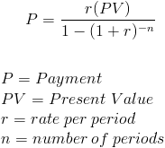
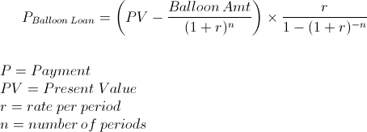

Annuity loan calculations
The loan payment formula is used to calculate the payments on a loan. The formula used to calculate loan payments is exactly the same as the formula used to calculate payments on an ordinary annuity. A loan, by definition, is an annuity, in that it consists of a series of future periodic payments.

Instead of entering the above formula, you can use the built in function. There is also two alternate functions, that instead of payment, gives the interest rate, or the length of the loan.
Calculating the payment:
Calculate fixed payments toward a loan
PaymentAnnuityLoan ( loan sum; number of months; number of payments pr year; annual interest rate)
- loan sum: The initial sum of the loan, or the restvalue of the loan.
- number of months: Usually loans run for several years, so you have to write 12* and the number of years in this parameter.
- number of payments pr year: This is usually 12. This parameter is included so you dont have to do math on the interest rate.
- annual interest rate.
Calculating the interest rate:
Calculate interest rate of an annuity loan
InterestRateAnnuityLoan( loan sum; number of months; Number of payments pr year; payment sum)
- loan sum: The initial sum of the loan, or the restvalue of the loan.
- number of months: Usually loans run for several years, so you have to write 12* and the number of years in this parameter.
- number of payments pr year: This is usually 12. This parameter is included so you dont have to do math on the interest rate.
- Payment sum.
As the interest rate can't be calculated by a single formula, the interest rate is solved by iterations - It use the same formula over and over again, testing with different interest rate, first with 100%, then, 0%, then 50%, then 25%, then 12.5% - closer and closer to the correct value, until the given payment value is off by less than 0,1
It is some parameters here, that can cause an error. If the payment sum is too small, i.e. less than the interest on the first calculations, the loan will be paid of by a negative interest. It is calculated, but the answer will be a negative value. If you have a so kind bank that accepts that, everything is fine. Some other combinations can be impossible.
Calculate the run-length of a loan:
Calculate years for an annuity loan given payment
YearAnnuityLoan( loan sum; Number of payments pr year; payment sum; annual interest rate)
- loan sum: The initial sum of the loan, or the restvalue of the loan.
- number of payments pr year: This is usually 12. This parameter is included so you dont have to do math on the interest rate.
- Payment sum.
- annual interest rate.
This function do the calculation by simulation. The calculator loops through all the payments until done, while counting. The last period will usually be paid less, so you dont get an desimal-presition exact value, but close enough in most cases. This function gives you an idea of how long one are going to pay on a loan given a payment that is affordable.
The ballon loan calculation
This kind of loan, is nearly the same as an ordinary annuity loan, but it runs until a given rest-value instead of zero. This can be used for leasing calculations, where the loan runs for to example 3 years, and then it is estimated an rest value of, say a car that is going to be sold after the leasing period is over. This loan breaks the sum of the loan in two pieses:
- downpayable part = loan sum - rest value.
- rest value part, that will be paid in full when loan is finished.

Calculate years for an annuity loan given payment
PaymentBallonLoan( loan sum; rest value; Number of months; Number of payments pr year; annual interest rate)
- Loan sum
- Rest value
- Number of months
- Number of payments pr year
- annual interest rate